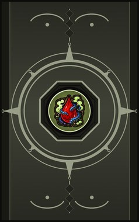
Home › Techniques › Clans and bloodlines
Aburame arts
15 techniques in the Clan tab.
Unlocks for pawns with the Bug control gene.
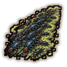
Mushi Ryūki (Bug Projection) DC
Chakra 12 to 20. Pour a line of kikaichū at the enemy. They bite and feed on chakra. The double line is wider and hungrier.
Mushi Ryūki (Bug Projection) DC
Chakra 12 to 20. Pour a line of kikaichū at the enemy. They bite and feed on chakra. The double line is wider and hungrier.
Pour a line of kikaichū at the enemy. They bite and feed on chakra. The double line is wider and hungrier.
| Rank | Chakra | Cooldown | Class level |
|---|---|---|---|
| D | 12 | 10 s | 2 |
| C | 20 | 10 s | 6 |
Mushitate (Bug Shield) D
Chakra 15. A wall of kikaichū around the user catches incoming shots.
Mushitate (Bug Shield) D
Chakra 15. A wall of kikaichū around the user catches incoming shots.
A wall of kikaichū around the user catches incoming shots.
| Rank | Chakra | Cooldown | Class level |
|---|---|---|---|
| D | 15 | 30 s | 2 |
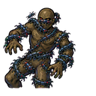
Mushi Shibari (Bug Grappling) DC
Chakra 15 to 20. Bugs swarm over one enemy's limbs and hold them. The extension reaches further and holds longer.
Mushi Shibari (Bug Grappling) DC
Chakra 15 to 20. Bugs swarm over one enemy's limbs and hold them. The extension reaches further and holds longer.
Bugs swarm over one enemy's limbs and hold them. The extension reaches further and holds longer.
| Rank | Chakra | Cooldown | Class level |
|---|---|---|---|
| D | 15 | 20 s | 3 |
| C | 20 | 20 s | 7 |
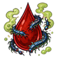
Gedoku (Poison Reduction) D
Chakra 10. The kikaichū filter the blood for a day: far better against toxins and disease.
Gedoku (Poison Reduction) D
Chakra 10. The kikaichū filter the blood for a day: far better against toxins and disease.
The kikaichū filter the blood for a day: far better against toxins and disease.
| Rank | Chakra | Cooldown | Class level |
|---|---|---|---|
| D | 10 | 12 hours | 3 |
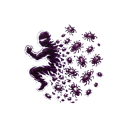
Mushikawarimi no Jutsu (Bug Replacement Technique) D
Chakra 20. D-rank. Lay a mass of bugs on a spot (or a few steps behind you); the next attack that hits you finds only the bugs, and you are standing where they were. Not against area techniques.
Mushikawarimi no Jutsu (Bug Replacement Technique) D
Chakra 20. D-rank. Lay a mass of bugs on a spot (or a few steps behind you); the next attack that hits you finds only the bugs, and you are standing where they were. Not against area techniques.
D-rank. Lay a mass of bugs on a spot (or a few steps behind you); the next attack that hits you finds only the bugs, and you are standing where they were. Not against area techniques.
| Rank | Chakra | Cooldown | Class level |
|---|---|---|---|
| D | 20 | 25 s | 2 |
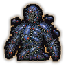
Yoroi no Mushi (Armour of Bugs) C
Chakra 20. Cover the body in bugs for half an hour: they soak blows and bite anyone adjacent.
Yoroi no Mushi (Armour of Bugs) C
Chakra 20. Cover the body in bugs for half an hour: they soak blows and bite anyone adjacent.
Cover the body in bugs for half an hour: they soak blows and bite anyone adjacent.
| Rank | Chakra | Cooldown | Class level |
|---|---|---|---|
| C | 20 | 1.2 hours | 5 |
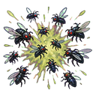
Genwaku Mushiheki (Blinding Bug Burst) C
Chakra 25. A burst of bugs over an area covers every enemy's eyes for half a minute.
Genwaku Mushiheki (Blinding Bug Burst) C
Chakra 25. A burst of bugs over an area covers every enemy's eyes for half a minute.
A burst of bugs over an area covers every enemy's eyes for half a minute.
| Rank | Chakra | Cooldown | Class level |
|---|---|---|---|
| C | 25 | 33 s | 6 |
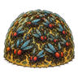
Mushikabe (Bug Wall) C
Chakra 30. A large dome of bugs around a spot blocks enemy shots for twenty-five seconds or until broken.
Mushikabe (Bug Wall) C
Chakra 30. A large dome of bugs around a spot blocks enemy shots for twenty-five seconds or until broken.
A large dome of bugs around a spot blocks enemy shots for twenty-five seconds or until broken.
| Rank | Chakra | Cooldown | Class level |
|---|---|---|---|
| C | 30 | 1.2 hours | 7 |
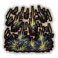
Mushi Ame (Bug Rain) C
Chakra 30. Bugs pour down over an area, biting everything for five seconds.
Mushi Ame (Bug Rain) C
Chakra 30. Bugs pour down over an area, biting everything for five seconds.
Bugs pour down over an area, biting everything for five seconds.
| Rank | Chakra | Cooldown | Class level |
|---|---|---|---|
| C | 30 | 1 hour | 8 |
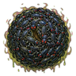
Mushi Kōchisho (Bug Prison) CB
Chakra 30 to 40. Seal one enemy in a ball of bugs: held, bitten and drained.
Mushi Kōchisho (Bug Prison) CB
Chakra 30 to 40. Seal one enemy in a ball of bugs: held, bitten and drained.
Seal one enemy in a ball of bugs: held, bitten and drained.
| Rank | Chakra | Cooldown | Class level |
|---|---|---|---|
| C | 30 | 1 hour | 9 |
| B | 40 | 1 hour | 11 |
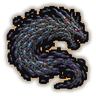
Hitoshirezu Mushiryūdan (Hidden Bug Dragon) BAS
Chakra 38 to 90. A dragon-shaped mass of bugs slams into the target area. Larger with each rank.
Hitoshirezu Mushiryūdan (Hidden Bug Dragon) BAS
Chakra 38 to 90. A dragon-shaped mass of bugs slams into the target area. Larger with each rank.
A dragon-shaped mass of bugs slams into the target area. Larger with each rank.
| Rank | Chakra | Cooldown | Class level |
|---|---|---|---|
| B | 38 | 25 s | 10 |
| A | 70 | 1.2 hours | 14 |
| S | 90 | 1.8 hours | 18 |
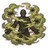
Mushi Kiri (Bug Mist) B
Chakra 40. Surround the user with a haze of insects for a minute that bites anyone close.
Mushi Kiri (Bug Mist) B
Chakra 40. Surround the user with a haze of insects for a minute that bites anyone close.
Surround the user with a haze of insects for a minute that bites anyone close.
| Rank | Chakra | Cooldown | Class level |
|---|---|---|---|
| B | 40 | 2 hours | 12 |
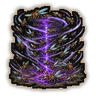
Mushi Kachū (Bug Vortex) A
Chakra 60. A spinning column of bugs traps every enemy in an area and drains them.
Mushi Kachū (Bug Vortex) A
Chakra 60. A spinning column of bugs traps every enemy in an area and drains them.
A spinning column of bugs traps every enemy in an area and drains them.
| Rank | Chakra | Cooldown | Class level |
|---|---|---|---|
| A | 60 | 2 hours | 14 |
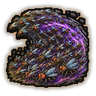
Yūen Mushinami (Grand Bug Wave) A
Chakra 49. A wave of countless insects floods a wide arc.
Yūen Mushinami (Grand Bug Wave) A
Chakra 49. A wave of countless insects floods a wide arc.
A wave of countless insects floods a wide arc.
| Rank | Chakra | Cooldown | Class level |
|---|---|---|---|
| A | 49 | 2.4 hours | 15 |
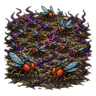
Mushi Arano (Bug Wasteland) S
Chakra 100. S-rank: the ground becomes a seething field of bugs for ten seconds.
Mushi Arano (Bug Wasteland) S
Chakra 100. S-rank: the ground becomes a seething field of bugs for ten seconds.
S-rank: the ground becomes a seething field of bugs for ten seconds.
| Rank | Chakra | Cooldown | Class level |
|---|---|---|---|
| S | 100 | 6 hours | 19 |
Chakra is the technique's base cost, the number in its def. In play it is multiplied by the pawn's chakra energy usage multiplier, which traits (chakra artificer 90%, volatile conduit 110%), World of Naruto genes and jutsu enhancements change, so the technique window can show a slightly different number for each ninja. Cooldowns are in-game time, as the technique window shows them, and the pawn's cooldown stat shortens or lengthens them. World of Naruto gives every ninja a base of 100 maximum chakra; genes and traits change it.